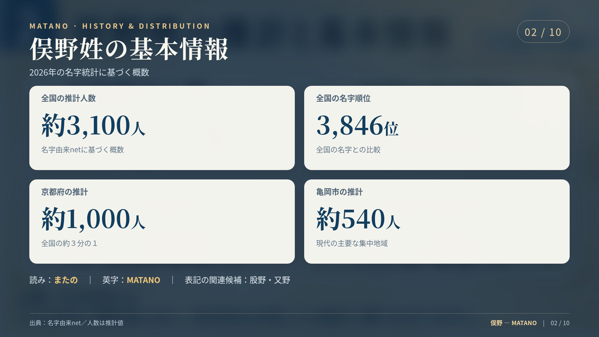
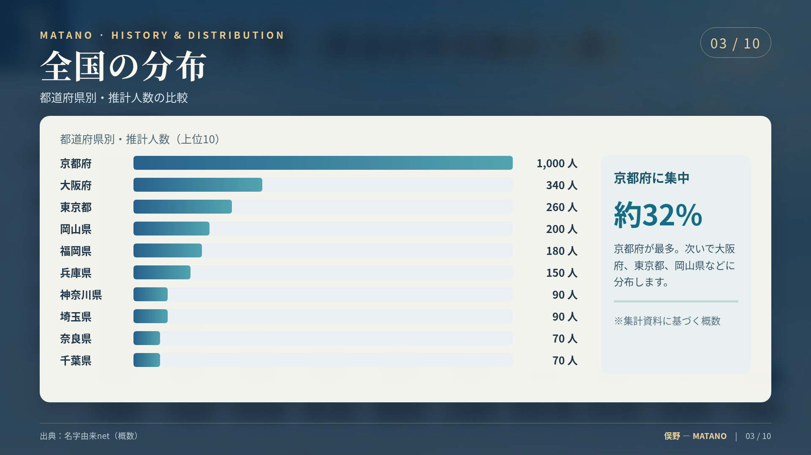
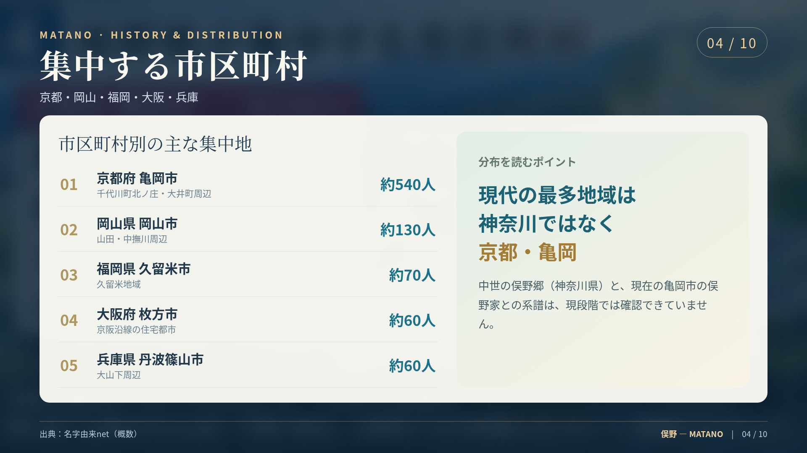
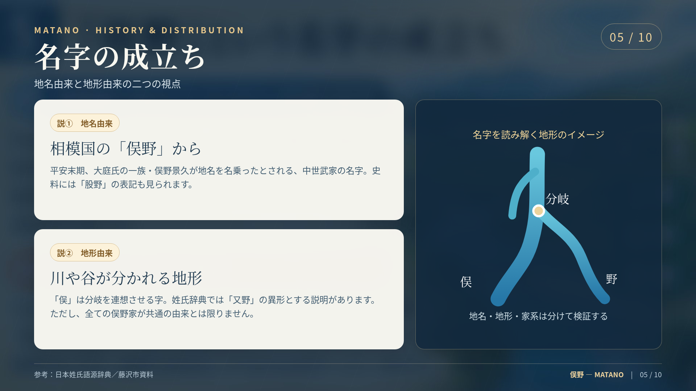
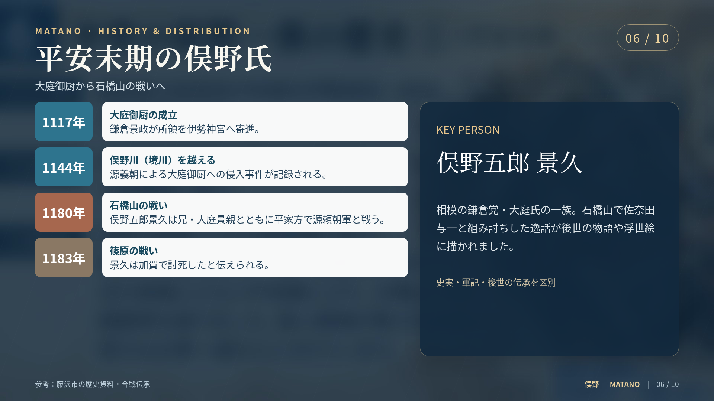
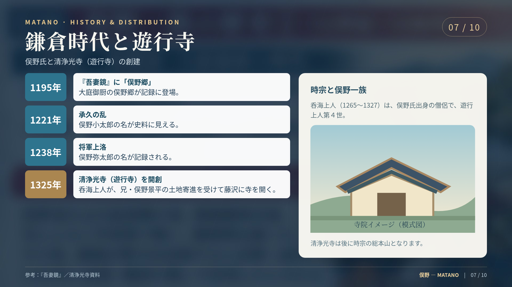
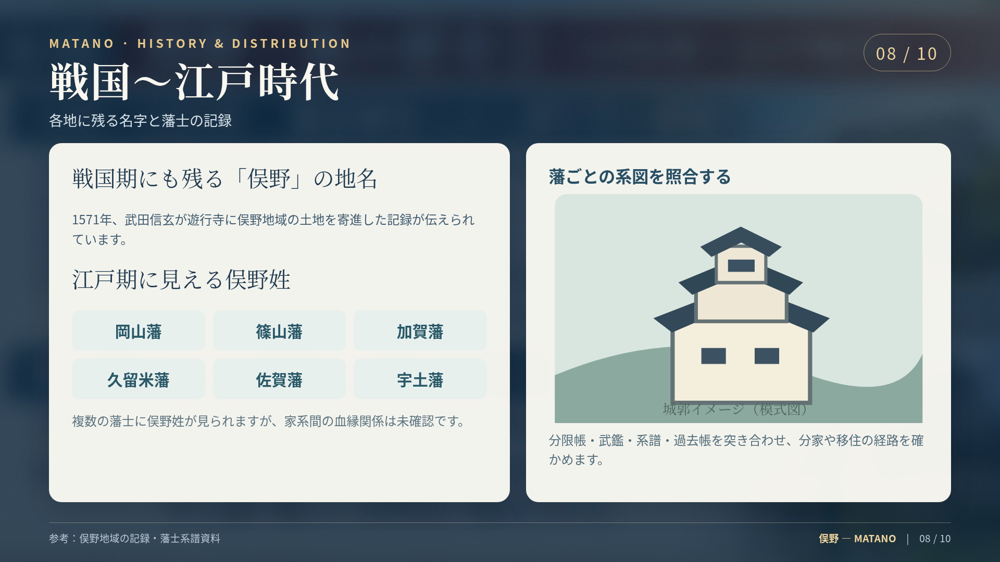
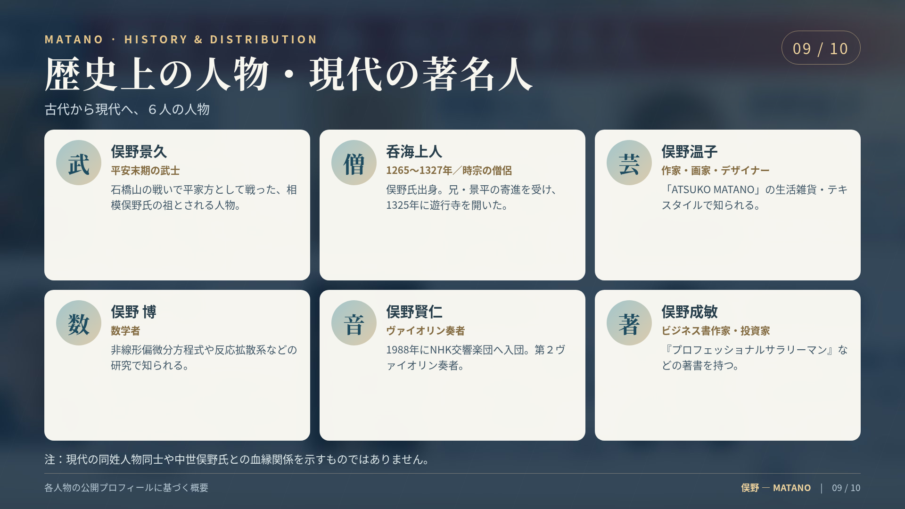
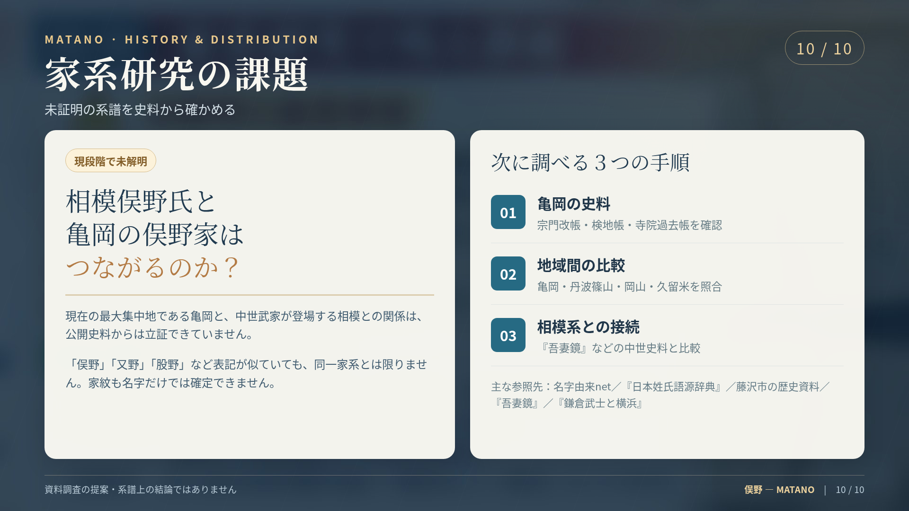

武
俣野五郎 景久
平安末期の武士
大庭景親の弟。桓武平氏鎌倉党の支流の武士とされ、1180年の石橋山合戦に平家方で参加。のち京都へ逃れたと藤沢市が記録しています。
[S04][S06]平安末期の相模国に登場した武家の名字。現代では京都・亀岡に大きな分布の中心を持つ。地名・家系・宗教史をたどり、確かな記録と未解明の系譜を見分ける調査記録。
「またの」と読み、現存する分布と中世の武家の史料を合わせて読み解きます。統計は推計値、家系のつながりは一次史料による裏付けを区別しています。

名字由来netの2026年4月時点の推計に基づく47都道府県データ。検索・地方選択・人数順の並べ替えができます。調査中はゼロを意味しません。[S02]
※全国約3,100人は独立推計です。各都道府県の概数を単純合計しても完全一致しません。
人口比率でも京都府が高く、岡山県・奈良県などが続きます。人数の多さと、地域人口に対する割合は別の指標です。[S01]

最大の集積は京都府亀岡市。岡山市・久留米市・枚方市・丹波篠山市にも比較的多く分布しています。[S01]
| 自治体 | 推計 | 地図 |
|---|---|---|
| 京都府亀岡市 | 約540人 | Google Maps ↗ |
| 岡山県岡山市 | 約130人 | Google Maps ↗ |
| 福岡県久留米市 | 約70人 | Google Maps ↗ |
| 大阪府枚方市 | 約60人 | Google Maps ↗ |
| 兵庫県丹波篠山市 | 約60人 | Google Maps ↗ |
※姓氏辞典の別系列では亀岡約500人、岡山約140人、篠山約70人の推計。推計元や集計時期が異なります。[S03]
小地域の記載は日本姓氏語源辞典。家ごとの血縁・本家分家を示す情報ではありません。[S03]

名字の起源は一つの系譜にまとめず、文献に記録された「相模の地名」と、名字語源辞典の示す「地形」の両方を検討します。
平安時代末期、大庭景親の弟・景久（景尚）が俣野を名字としたのが中世武家としての俣野氏の始まりとされます。大庭氏は桓武平氏鎌倉党の流れに属し、俣野氏は「股野」とも記されました。[S06]
日本姓氏語源辞典では「俣野」を「又野」の異形と解説しています。「俣」は分かれる場所を連想させますが、具体的にどの家がどの地形を起源としたかは、それぞれの家系史料による検証が必要です。[S03]

名字由来netは、相模のほか河内（現在の大阪府東部）、紀伊（和歌山県・三重県南部）、筑後（福岡県南部）、武蔵（東京都・埼玉県・神奈川県北部）などに俣野姓が見られると説明しています。ただし、各地の俣野家の相互関係や、相模からこれらの地域へ移住した経路までを示す記述ではありません。[S01]
大庭御厨の記録、石橋山合戦、『吾妻鏡』に見える名、そして遊行寺の創建まで。伝承と記録の違いも明示しています。



日本姓氏語源辞典によると、江戸時代の岡山藩・篠山藩・加賀藩・久留米藩・佐賀藩・宇土藩の藩士に俣野姓が記載されます。しかし、これら6藩の俣野家が同祖であるかは未証明です。各藩の分限帳、武鑑、系譜、寺社文書を一つずつ照合する必要があります。[S03]
前回調査に挙がった1571年の武田信玄と俣野地域の土地寄進の具体的記述は、今回参照した主要公開資料から原文を裏付けられないため、年表の確定事項には含めていません。
俣野景久と佐奈田与一の組み討ちは歌川国芳などが繰り返し描いた人気の題材です。小田原市の公開解説では、海を足元に描くなど劇的な演出も指摘しています。作品は当時の記録写真ではなく、後代に成立した美術表現です。[S08]
小田原市の浮世絵を見る ↗歴史に名が残る武士・僧侶から、現代のデザイン・数学・音楽・著述まで。家系が同一であることを意味する一覧ではありません。
大庭景親の弟。桓武平氏鎌倉党の支流の武士とされ、1180年の石橋山合戦に平家方で参加。のち京都へ逃れたと藤沢市が記録しています。
[S04][S06]呑海上人の兄。1325年、遊行寺を開くため土地を寄進したと寺の公式縁起に記されています。
[S07]相模俣野氏の出身。兄・景平の支援で清浄光寺を開いた時宗の僧侶。俣野姓の中世史で宗教史と直接つながる人物です。
[S07][S14]1950年東京・目黒生まれ。1979年にギフトショップを開き、雑貨やテキスタイルを中心に「ATSUKO MATANO」の世界を展開。
[S09]非線形偏微分方程式・反応拡散系などを研究。東京大学大学院数理科学研究科で教授を務め、J-GLOBALでは2018年以降の明治大学特任教授歴が掲載されています。
[S10]1963年熊本市生まれ。桐朋学園大学音楽学部を1988年に卒業し、同年NHK交響楽団へ入団。
[S11]著者名は俣野成敏。企業勤務時代に社内起業し、2012年独立。『プロフェッショナルサラリーマン』などを著しています。
[S12]
地名・現在の名字集中地・中世史跡の10地点を選択できます。左の場所を押すと地図が切り替わり、「Googleマップで開く」から詳細表示・経路検索に進めます。
最大の問いは「現代の亀岡の俣野家と中世の相模俣野氏がつながるのか」。現状の公開資料だけで断定せず、地域ごとの系譜を個別に復元します。
千代川町北ノ庄・大井町土田の寺院過去帳、宗門人別帳、検地帳、墓碑を探索。
各地域の旧藩士名簿・分限帳と寺社史料を比較し、姓名・年代・家紋・婚姻・転出先を確認。
『吾妻鏡』の登場人物、『鎌倉武士と横浜』などの研究書、清浄光寺の関連文書を確認。
同時代の複数の証拠が一致した人物だけを接続。推定・伝承・未確認を明確に表示。

これまでに制作した1920×1080の画像を全点収録。画像を選ぶと拡大表示できます。本文の史料検証を優先し、画像内の説明と本文に相違がある場合は本文と出典を参照してください。
自治体・寺院公式・研究者・楽団公式情報などを優先し、姓氏統計の推計値と歴史的記録を分けて記載しました。以下のリンクは外部サイトです。